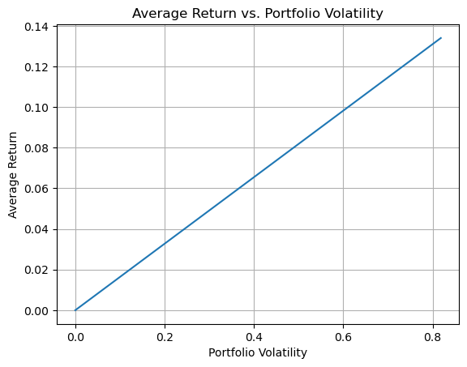

Capital Allocation#
🎯 Learning Objectives
Decompose the capital-allocation problem into two decisions.
Separate “How large should my risk portfolio be?” from “How do I spread that risk across assets?” and see why each question has distinct inputs.Translate expected return and covariance into optimal weights.
Apply the mean–variance framework (or its CAPM special case) to derive recommended positions across stocks, bonds, and factor portfolios.Allocate between market beta and portable alpha.
Learn the mechanics of combining a hedged long-short (zero-beta) strategy with a market position, and see how the separation theorem guides sizing.
Table of Contents#
Capital Allocation
Libraries and Auxiliary Functions
Our Data for today
The Fundamental Capital Allocation Problem
All you need is Sharpe, Is Sharpe All you need❓
How to allocate ACROSS assets? The Mean-Variance Efficient Portfolio
Alpha bets
Key Takeaways
Libraries and Auxiliary Functions#
Now the get_factors function allow you to choose the frequency: daily or monthly
Which Factors you get
CAPM: RF, MKT-RF
FF3: RF, MKT-RF, SmB (size), HmL (Value)
FF5: FF3+ RmW (profitability/quality), CmA (Capex)
FF6: FF5+Momentum
The Fundamental Capital Allocation Problem#
Every investor faces this question: How much risk should I take, and how should I spread that risk across different assets?
This chapter will walk you through key concepts and hands-on tools to:
Decide how much to allocate to risky vs risk-free assets.
Understand investor behavior (principal vs. delegate).
A fundamental insight of portfolio theory is that these two decisions are separable
Investor can first decide on the portfolio that has the best risk-return properties (allocation across assets)
Then–given the properties of such portfolio–investors can decide how much to allocate to it vs the risk-free rate
Who Decides How Much Risk to Take?#
Before diving into the math, let’s think about a fundamental question in portfolio construction:
💬 Who is choosing the portfolio—and what do they care about?
Every investment decision is ultimately shaped by this.
🧍 If You’re the Principal#
You’re investing your own money, and you bear all the risks and rewards.
Your optimal portfolio depends on:
Your preferences (especially risk tolerance),
How terrible you feel if you have less than you expected
How much joy would you enjoy if you had more
Your investment horizon,
Your personal financial goals.
Minimum retirement income
Minimum balance in college fund
Minimum budget for health issues
Future purchase of a property
Your background risk
Do you have other sources of income? are they risky?
Some “theory”#
We often model the principal’s preferences using expected utility theory.
You want more wealth to consume, but are risk averse
If this utility is mean-variance, this gives rise to the classic trade-off:
where:
\( \mathbb{E}[r_p] \): expected excess return of the risky portfolio
\( \gamma \): investor’s risk aversion
\(\text{Var}(r_p)\) : portfolio variance
The mean-variance criteria will be approximately correct even for other preferences as long returns are close to normal
We will discuss deviation from normality in our risk management lecture
Note that we are assuming here free borrow and lending at the rate \(r_f\)
The Portfolio Problem#
Your optimal portfolio is given by choosing x to maximize this quadratic function
You find any maximum by setting the derivative of the objective with respect to the choice variable to zero:
👉 Your Optimal weight is proportional to the portfolio risk-return trade-off
Your optimal portfolio standard deviation is
👉 Your Optimal vol is proportional to the portfolio Sharpe Ratio
Our Data for today#
Today we will work with a new data set.
We will work with 6 portfolios
Mkt-RF: Buy all US stocks, short the risk-free rate
SmB, Small-minus-Big: Buy the smallest stocks by market cap, short the largest
Hml, High-minus-Los: Buy the stocks with the highest Book-to-Market, short the ones with the lowest Book-to-Market
RmW, Robust-minus-Weak: Buy stocks with the highest profitability over assets, short the ones with the lowest
CMA, Conservative-minus-Aggressive: Buy the stock that have the lowest CAPEX over assets, short the ones with the highest
MOM, Momentum: Buy the stocks that performed the best in the last 12 months, sell the stocks that performed the worst
All these portfolio are “market-cap-weighted”.
once we isolate the stocks that go in each portfolio (long or short) we weight them by market cap
We make the long and short side same size, so all these portfolio are “excess returns”
Putting aside (very important) frictions in taking leverage, these portfolios are “costless to implement” as the have zero cost
You fund your longs with your shorts
Except the market where the short side is risk-free, all the others are designed to be “market-neutral” cross-sectional bets
You are not taking a view on the market as a whole, but only in one segment of the market against the other
These portfolios are the core of the “smart beta” industry. And it is often called systematic investing and even quantitative investing
Their construction has many details, which we will did into chapter 10
They are called factors because we tend to use these trading strategies as factors to control for known priced risks
But players like Blackrock, AQR, Ivesco, Dimensional Fund Advisors, Vanguard, State Street,… make a living of supplying these factors in a easy to trade wrapper to investors (in ETF or mutual fund)
# url="https://raw.githubusercontent.com/amoreira2/Lectures/main/assets/data/GlobalFinMonthly.csv"
# Data = pd.read_csv(url,na_values=-99)
# Data['Date']=pd.to_datetime(Data['Date'])
# Data=Data.set_index(['Date'])
# Rf=Data['RF']
# Data=Data.drop(columns=['RF']).subtract(Data['RF'],axis=0)
# Data.head()
df = get_factors(factors='FF6',freq='monthly').dropna()
df.head()
| RF | Mkt-RF | SMB | HML | RMW | CMA | MOM | |
|---|---|---|---|---|---|---|---|
| Date | |||||||
| 1963-07-01 | 0.0027 | -0.0039 | -0.0057 | -0.0081 | 0.0064 | -0.0115 | 0.0101 |
| 1963-08-01 | 0.0025 | 0.0508 | -0.0095 | 0.0170 | 0.0040 | -0.0038 | 0.0100 |
| 1963-09-01 | 0.0027 | -0.0157 | -0.0025 | 0.0000 | -0.0078 | 0.0015 | 0.0012 |
| 1963-10-01 | 0.0029 | 0.0254 | -0.0057 | -0.0004 | 0.0279 | -0.0225 | 0.0313 |
| 1963-11-01 | 0.0027 | -0.0086 | -0.0116 | 0.0173 | -0.0043 | 0.0227 | -0.0078 |
⚡ ⏰ Question: G1 ⚡#
What is the optimal volatility of the portfolio of investors that only invests in each of these assets individually? What is the optimal weight?
Pick an asset and show how the optimal portfolio variance changes as risk aversion goes from close to zero (why not zero?) to very large (say 400)
All you need is Sharpe, Is Sharpe All you need ❓#
-Sharpe is all you need if
You have mean-variance preferences (do you?)
Returns are normally distributed (why?)
In general you have to have in mind a few things
We can already see that having a large Sharpe ratio is a nice thing to have:
Increases the growth of your portfolio per unit of risk
For the same growth , you need to take less risk
Expected growth means you are less likely to have large losses
But…
There might be stronger deviations from normality for some trading strategies–for example option based strategies , or if you are trading at high frequency
Useful to always check the “realized tail” of your portfolio
Are black 🦢 too frequent?
SR is not observed. You have to estimate and estimation is HARD specially for the numerator
👉You should always think as an approximation
Finance is fundamental about QUANTITATIVE decisions
👉 You need a model to have a sense of how much
🧠But it is just a model!🧠
✌ How to allocate ACROSS assets? The Mean-Variance Efficient Portfolio#
Implicit in our discussion is that you have some desired portfolio with some Sharpe ratio \(SR_p\) and you are deciding how to invest in it.
In the problem above we did one by one, but that is dumb. The problem only makes sense AFTER you know the best possible portfolio.
How to build a portfolio that maximizes you SR?
If you know the vectors of expected excess returns across your assets and their variance covariance matrix the answer is easy! $\(W=w E[R^e]\Sigma_{R}^{-1} \)\( This is the MEAN-VARIANCE EFFICIENT PORTFOLIO associated with moments \)E[R^e]\(,\)\Sigma_{R}$
\(E[R^e]\) is the vector of FORWARD LOOKING expected excess returns across assets
\(\Sigma_{R}\) is the FORWARD LOOKING variance-covariance matrix
w is a scalar that controls the overall size of your portfolio, but does not impact the SR
This portfolio is Holly Grail of Quant investing 🤯
So simple, and yet so hard. Why?
Intuition for the MVE weights#
This same portfolio solves all the following problems
\( \max_W E[W'R^e_T]-\gamma/2 Var(W'R^e_T)\)
\( \max_W E[W'R^e_T]~~~subject~~to~~~Var(W'R^e_T)\leq Vmax \)
\( \min_W Var(W'R^e_T)~~~subject~~to~~~E[W'R^e_T]\geq Emin \)
⚡ ⏰ Question: G4 ⚡ Explain to me what each of these problems above are solving. Yeah just go from math to english
It should not be surprising! They all want the highest SR, but use it to achieve different goals
Here is the solution for the first one
\( \max_W E[W'R^e_T]-\gamma/2 Var(W'R^e_T)\)
\( \max_W W'E[R^e_T]-\gamma/2 W'Var(R^e_T)W\)
You again find any maximum by setting the derivative of the objective with respect to the choice variable to zero. The only difference is that now you are choosing a vector!
🤯 This is Calculus+Linear algebra🤯
The first order condition (or the optimality) is \( E[R^e_T]-\gamma Var(R^e_T)W^*=0\)
👉 This is just saying that the marginal net benefit of invest more in any asset is exactly zero at the optimum
You can rewrite this as
where \(W^*\) are the optimal weights
We can multiply by the inverse of the Variance-covariance matrix in both sides
We get: $\( W^*=\frac{1}{\gamma}Var(R^e_T)^{-1}E[R^e_T] \)$
⛪ Two fund Separation#
\(\frac{1}{\gamma}\) is simply a scalar that lever-delever your portfolio to hit your desired goal
The maximum Sharpe Ratio portfolio is really given by the term \( W^*=Var(R^e_T)^{-1}E[R^e_T] \)
This means that to hit a variance target or a expected return target all you need to do is solve for the leverage that implements it!
Sometimes this is referred as “two-fund” separation because everyone with all sort of different risk-aversions only need to invest in two “funds”: the risk-free fund, and the maximum Sharpe Ratio fund
How is this possible: They invest with very different weights
A risk-averse investor does not hold safer assets–it holds a safer portfolio that include a little bit of the MVE portfolio and a lot of the risk-free asset
A super risk-tolerant investor does not hold the riskiest assets–it holds a lot of the MVE portfolio, potentially leveraging it’s portfolio to get where she wants to be
⚡ ⏰ Question: G2 ⚡#
For example, suppose I want to hit an expected excess return target of 5% per year, What is my optimal portfolio?
Lets apply this to the problem of allocating across these factors
complete the code and answer the questions below
# lets assume the sample moments are the true moments of the distribution
muR=Data.__()
display(muR)
SigmaR=Data.__()
display(SigmaR)
# this inverts the variance covariance matrix
display(np.linalg.inv(SigmaR))
W= __ @ __
display(W)
# Now we have the optimal mix of risky assets. How do you scale it to achieve your desired premium?
# hint: the final portfolio will be W*=l*W where l is a scalar, i.e. a number. What is the number that you need to achieve your goal?
l=__
W_star=l*W
# What is the volatility of this portfolio?
# what it's Sharpe ratio?
# does it depend on l? does it depend on your target return?
The investment frontier (now including a risk-free asset)#
What does it mean that the relationship between Expected return and volatility is linear?
Is that what you expect? Is that true in general as you change portfolio weights?
# Define the range of w values
w_values = np.linspace(0, 5, 100)
# Calculate the portfolio returns and volatilities for each w
ER = []
Vol = []
for w in w_values:
weights = w * np.linalg.inv(SigmaR) @ muR
er_w = weights @ muR
vol_w = np.sqrt(weights @ SigmaR @ weights)
ER.append(er_w)
Vol.append(vol_w)
plt.plot(Vol, ER)
plt.xlabel('Portfolio Volatility')
plt.ylabel('Average Return')
plt.grid(True)
# Bonus: what is the slope of this line?

💪 Alpha bets#
It is useful to decompose your allocation in terms of “factor bets” and “alpha bets”
Most fund managers have tight limits on factor exposures anyways, so factor exposure is more of a consequence of your alpha bets that you need to control rather then a form of investing for most fund managers.
If you are a large capital allocator, like a Pension fund or a university endowment then factor bets are also very important, since on average most portfolios risk must be dominated by common factors
Let’s say that you identified N trading strategies
You believe their alphas are A (N by 1)
You estimate their factor Betas B (N by 1) (single factor model for now)
And their idio variance \(\Sigma_{\epsilon}\), which is diagonal. These are idio bets after you remove the factor exposure
You have a mandate to have zero factor exposure.
What is your optimal portfolio
we are focusing now on the composition of your portfolio, lets put the level of risk aside (i.e. the leverage)
What is your allocation on each trading strategy?
Assuming you can trade the factor, how much of it you buy/sell directly?
The solution is \(w*W\) and \(w*W_f\) for any scalar w, where
\(W=A\Sigma_{\epsilon}^{-1}\)
\(W_f=-W'\beta\)
and you pick \(w\) to control the overall volatility of your portfolio. In case the factors strip out the strategies of any co-movement we get
The fact that all the trading strategies are stripped out of any co-movement leads to a really clean formula–but this is an assumption.
What we will get in general?
You can rewrite in terms of “volatility allocations” in each strategy
What is this?
recall that \(\sigma_{\epsilon,i}\) is the volatility of the strategy that is long the asset and short the factor in the optimal hedging, i.e. the vol of the hedging portfolio, and alpha is….
so if you set \(h=-\beta_i\)
and follows that \(E[r^e_i-h^if]=\alpha_i\) and \(Var(r^e_i-h^if)=\sigma_{\epsilon,i}^2\)
Implementation:Estimates for \(alpha\), \(\beta\), Hedged portfolios covariances#
import statsmodels.api as sm
# Define the factors and the market factor
assets = ['SMB', 'HML', 'RMW', 'CMA', 'MOM']
factor = 'Mkt-RF'
# Initialize lists to store the results
Alpha = []
Beta = []
residuals = []
Alpha_se = []
Hedged_returns=[]
# Run univariate regressions with the market as the factor
df_sample=df.copy()
for asset in assets:
X = sm.add_constant(df[factor])
y = df[asset]
model = sm.OLS(y, X).fit()
# store the results
Alpha.append(model.params['const'])
Beta.append(model.params[factor])
residuals.append(model.resid)
Hedged_returns.append(model.params['const']+model.resid)
# Convert Alpha and Beta to numpy arrays
Alpha = np.array(Alpha)
Beta = np.array(Beta)
# Calculate the variance-covariance matrix of the residuals
Hedged_returns = pd.DataFrame(np.vstack(Hedged_returns).T)
Hedged_returns.columns = assets
residuals_matrix = np.vstack(residuals).T
Sigma_e =np.cov(residuals_matrix.T)
# Display the results
print("Alpha:", Alpha*12)
print("Beta:", Beta)
print("Sigma_e:", Sigma_e*12)
Alpha: [0.00324195 0.04349594 0.03955175 0.04143328 0.08341451]
Beta: [ 0.19954208 -0.13719646 -0.09352601 -0.16246303 -0.16205943]
Sigma_e: [0.01005633 0.01014849 0.00570013 0.00446193 0.0203163 ]
Implementation: Apply optimal weights formula#
⚡ ⏰ Question: G3 ⚡
Complete the code and answer the questions below
# optimal weights for the hedged factors
W=Alpha @ np.linalg.inv(Sigma_e)
l=_ # set l to achieve a target volatility of 16% per year
W = W*l
display(W)
# what is your position on the market?
W_mkt=_
# what is an alternative approach to get the same result using the hedged returns directly?
# did we assume anything about the covariance matrix of the returns? Or we just let the data speak?
# How would you impose that the covariance of the residual are zero? Why would you?
How to Combine the Hedged portfolio (alpha) and the Market (beta)#
If your mandate allows and you see your investment in the factor as simply a financial issue
you care exclusively about the returns of the portfolio
Do not care how the factor (i.e. the market) might co-move with your non-financial wealth–say when the market tanks, recession is more likely and you are more likely to lose your job, your firm do poorly
Then it is basically the same as with the alphas…
But still useful to separate as you probably have different confidence on the market risk-premium than on the alphas
Recall our formula for the mean-variance efficient weights: \(W^*= Var(R^e)^{-1}E[R^e]\)
Now this becomes really simple because the covariance of the new Hedged-MVE strategy is zero with the market
So the optimal weights are just
You invest in each strategy according to the strength of the risk-return trade-off in the strategy
What is the optimal combination between your alpha combo portfolio and the market? How much vol you allocate to each?
From Individual Appraisals to Optimal Combo Sharpe Ratios#
By how much can you increase your portfolio Sharpe ratio if you combine optimally combine two uncorrelated portfolios?
for any two strategies A and B that have zero correlation with each other, you can find the maximum achievable Sharpe Ratio with the simple formula
The Hedged and the market are orthogonal by construction–> we took out any beta exposure the asset might have!
If you care about the Sharpe ratio of your final portfolio, you do not care about the Sharpe ratio of a particular strategy
You instead care about the Sharpe ratio of the strategy after you hedged out your current portfolio, i.e. the Appraisal ratio
You care about the appraisal ratio of the strategy relative to your portfolio
What is the maximum Sharpe Ratio you can achieve?
📝 Key Takeaways#
Risk size and asset mix are separate levers. First decide how much volatility you can stomach; only then choose the combination of assets or factors that delivers the best reward for that risk.
Portfolio composition is key. Ig you know the moments, there is a magical formula
Portable alpha Investors often think about factor exposure differently from alpha exposure. First construct the optimal alpha combo, then think about how to mix with factor exposure–if you can
Appraisal Ratio is the Sharpe Ratio cousin that actually matters